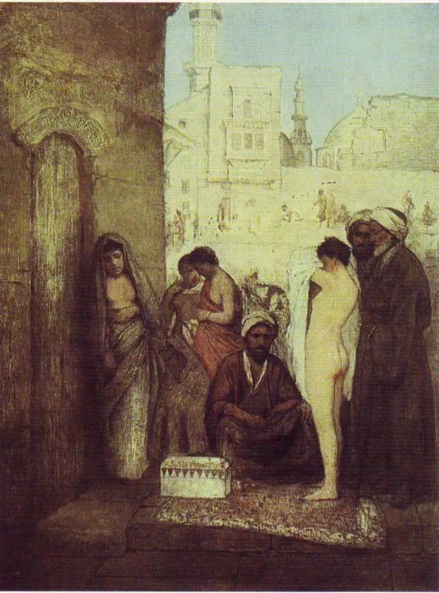
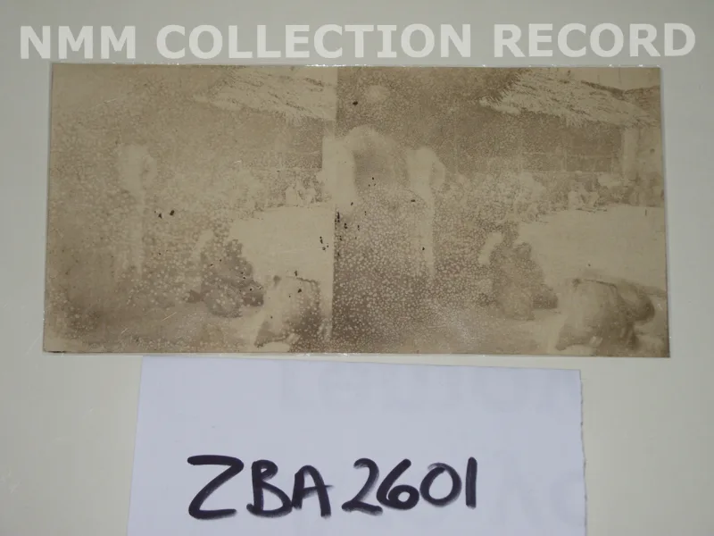
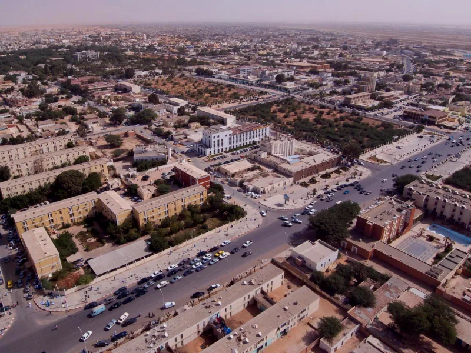

The facts sit in Islam's own trusted sources. You can make this point from their books alone.
Islamic law set rules for slavery. It never ended it.
Quran 4:24 makes captive women lawful to their captors, with 33:50 beside it. Freeing a slave is praised (Sahih al-Bukhari 2517).
Papers of release are urged (Quran 24:33). But owning a slave stayed lawful in every school.
Muhammad owned, bought, sold and freed slaves. He bought one for two black slaves (Sahih Muslim 1602).
He took captives from Banu Mustaliq (Sahih al-Bukhari 2541). He held Mariyah the Copt as a concubine.
Not from within. Saudi Arabia ended it in 1962.
Oman in 1970. Mauritania in 1981, the last land on earth.
It was made a crime there only in 2007, and groups still find it. In 2014 ISIS brought back sex slavery of Yazidi women.
Its own magazine Dabiq cited the old law books to defend it.
The law of Moses also set rules for slavery. It did not end it.
And Christians long twisted Scripture to defend it. Say that first.
The difference is which way each road runs. Release in the seventh year (Exodus 21:2).
Death for stealing a man (Exodus 21:16). Shelter, not return, for one who runs (Deuteronomy 23:15-16).
Paul asks Philemon to take Onesimus back "no longer as a slave but as a beloved brother." And the men who ended the trade were mostly Christians — Wilberforce, and the Quakers.
IslamQA 94840 argues for slow release. Islam took up a world built on slaves and bent it toward freedom.
Freeing a slave pays for a broken oath and other sins. It is one of the uses of zakat (Quran 9:60).
Masters must feed and clothe slaves as themselves. The mukataba paper let a slave buy his freedom (24:33).
Muhammad freed slaves, and raised Zayd to be his adopted son and a commander. Modern scholars add that treaties bind under sharia.
So the treaties that ended slavery bind too, and groups like ISIS break that consensus.
They admit the core, IslamQA included. The slow-release answer explains the kindness.
It does not explain the thirteen centuries in which no school and no state took the last step. Nor why the end came from outside.
Nor why ISIS could quote the mainstream law books, not fringe ones. Use it gently, and own our failures first.
"Both our books set rules for slavery, and Christians got this badly wrong. May I show you where the two roads part?"



They say Islam bent a slave-built world toward freedom, step by step.
IslamQA 94840 defends slow release and the direction of travel. Islam inherited a world economy built on slaves, and turned it toward freedom. Freeing a slave pays for a broken oath and for other sins. It is one of the set uses of zakat (9:60), and among the most praised acts of piety. Masters must feed and clothe slaves as they feed and clothe themselves. The mukataba contract (24:33) let slaves buy their freedom. Muhammad freed slaves, and raised one, Zayd, to be his adopted son and an army commander.
Modern scholars add that treaty duties bind under sharia. So the treaties that ended slavery bind Muslim states too, and the slave-raiding of groups like ISIS breaks that consensus. On this account the method was freedom by attrition, and abolition fulfils the intent rather than opposing it.
Strong for you, but own our failures first: the difference is direction.
This is graded admitted because the core facts are conceded on all sides. IslamQA affirms today that sharia never forbade slavery. The direction-of-travel defence explains the softening. It does not explain the thirteen centuries in which no school and no state took the last step. Nor why the end arrived only under outside pressure. Nor why ISIS could cite mainstream classical fiqh rather than fringe texts.
Be honest about the Bible. The law of Moses also set rules for slavery rather than ending it, and Christians long misused Scripture to defend it. The difference is direction. There are release rules, the death penalty for man-stealing, Deuteronomy's shelter for those who run, and Philemon's no longer as a slave but as a beloved brother. And the movement that ended it was driven by Christian conviction.
Use this comparison carefully, and concede Christian failures first. The argument is strongest when it stays about texts and legal systems, not about whose ancestors behaved better.